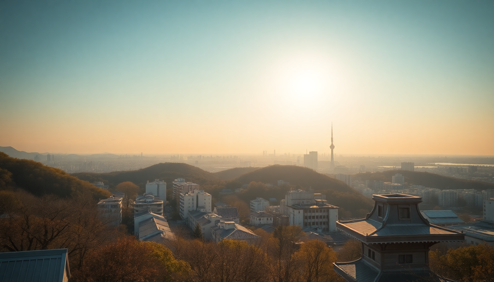

Where to Stay in Tokyo: Best Neighborhoods for Every Budget

I’ve been to Tokyo four times, and each trip taught me something new about where to lay your head. The city is massive—23 wards, dozens of distinct neighborhoods—and picking the wrong base can mean an extra hour on the train every morning. This guide is the shortlist I wish I’d had on my first trip: honest breakdowns of seven neighborhoods, what they cost, and who they’re actually good for. No fluff, just what worked for me and what didn’t.
What is the best neighborhood for first-timers on a mid-range budget?
Shinjuku is the default answer for good reason. It’s a transport hub (JR Yamanote Line, multiple subway lines, Narita Express), so you can get anywhere in under 30 minutes. The west side is business towers and high-end hotels like the Park Hyatt Tokyo; the east side is neon, tiny bars, and the chaos of Kabukicho. We stayed at Hotel Gracery Shinjuku (the Godzilla hotel) on a mid-range trip and loved the convenience—7-Eleven downstairs, subway entrance two minutes away.
- Pros: Unbeatable transit, endless food options (try Omoide Yokocho for yakitori), nightlife that runs until 5 AM.
- Cons: Can feel overwhelming. Kabukicho at night is loud and has some pushy touts. Not ideal for families with young kids.
- Budget range: Mid-range to luxury. Budget options exist but are small and often in the red-light fringe.
Where should I stay in Tokyo on a tight budget?
Ueno and Asakusa are your friends. Ueno has a massive park, several museums, and Ameya-Yokocho market street where we ate grilled squid for ¥200. The Ueno Station area puts you on the Yamanote Line and the Ginza subway line. We booked Sutton Place Hotel Ueno for ¥8,000/night—clean, basic, and a 5-minute walk to the park. Asakusa is similar but more tourist-focused around Senso-ji Temple and Nakamise-dori. It’s quieter at night, which some people prefer.
- Pros: Cheap eats everywhere, capsule hotels and business hotels under ¥10,000, easy access to Narita via Keisei Line.
- Cons: Fewer late-night options. Asakusa feels a bit like a theme park after 9 PM.
- Budget range: Budget to mid-range. You can find a private room for ¥6,000–¥10,000.
What neighborhood is best for nightlife and solo travelers?
Shibuya is the energy center of Tokyo. The Shibuya Scramble crossing is touristy (yeah, it’s crowded), but the area around Dogenzaka and Center Gai has hundreds of bars, izakayas, and clubs. I stayed at Shibuya Granbell Hotel on a solo trip and could walk to Nonbei Yokocho (Drunkard’s Alley) for tiny whiskey bars. The Shibuya Station is a major hub, but the station itself is a labyrinth—expect to get lost your first day.
- Pros: Best people-watching in Tokyo, endless nightlife, shopping at Shibuya 109 and LOFT.
- Cons: Hotels are expensive for the size. The crowds at rush hour are brutal.
- Budget range: Mid-range to luxury. Hostels and capsule hotels exist but book weeks ahead.
Is Ginza worth the splurge for luxury travelers?
Yes, but only if you want to be in the middle of high-end shopping and fine dining. Ginza is clean, wide sidewalks, and feels like a different city from Shinjuku. We did a splurge stay at The Peninsula Tokyo—the service is absurdly good, and the room overlooked the Imperial Palace gardens. Ginza Station connects to the Hibiya, Marunouchi, and Ginza lines. If you’re here for Michelin-starred sushi ( Sushi Yoshitake is in the neighborhood), it’s worth it.
- Pros: Quiet at night, luxury boutiques (Hermès, Chanel), easy walk to Tsukiji Outer Market for breakfast.
- Cons: Dead after 9 PM. No nightlife. Budget hotels are virtually nonexistent.
- Budget range: Luxury only. Expect ¥30,000+/night for a standard room.
Where should families with kids stay in Tokyo?
Roppongi isn’t just for expats and nightclubs. The Roppongi Hills complex has a great kids’ museum ( Mori Building Digital Art Museum ), a cinema, and plenty of family-friendly restaurants. The Grand Hyatt Tokyo has connecting rooms and a pool—a rare find in Tokyo. Roppongi Station is on the Hibiya and Oedo lines, which get you to Ueno Zoo or Odaiba quickly. Just avoid the club area on Friday nights.
- Pros: Spacious rooms (by Tokyo standards), English-friendly, green spaces like Arisugawa Park.
- Cons: Feels less “Japanese” than other neighborhoods. Some areas are seedy after dark.
- Budget range: Mid-range to luxury. Business hotels here are pricier than in Ueno.
What’s the best neighborhood for a quiet, local experience?
Yanaka is the anti-Tokyo. No skyscrapers, no neon, no crowds. This old neighborhood survived the 1923 earthquake and WWII bombings, so it’s full of wooden houses, temples, and narrow alleys. We rented an Airbnb near Yanaka Ginza shopping street and spent mornings at Kayaba Coffee (established 1938). You’re a 15-minute walk from Nippori Station on the Yamanote Line, so you’re not stranded.
- Pros: Real Tokyo atmosphere, great for photography, cat-themed shops everywhere.
- Cons: Few hotels—mostly guesthouses and Airbnbs. Limited nightlife and dining after 8 PM.
- Budget range: Budget to mid-range. Guesthouses run ¥5,000–¥12,000/night.
Should I stay in Akihabara if I’m not into anime or electronics?
Probably not. Akihabara is electric town—literally buzzing with pachinko parlors, maid cafes, and multi-story electronics stores like Yodobashi Camera. It’s fascinating for an afternoon, but staying here means dealing with constant noise and a very specific vibe. The JR Akihabara Station is convenient (Yamanote, Sobu, and Keihin-Tohoku lines). We walked through at 11 PM and it was still packed with salarymen and tourists. If you’re into retro gaming or tech, it’s paradise. Otherwise, visit for a few hours and stay elsewhere.
- Pros: Unique energy, cheap eats (try Chabara food hall), excellent train connections.
- Cons: Loud day and night, limited green space, hotels are utilitarian boxes.
- Budget range: Budget to mid-range. Capsule hotels are common here.
FAQ
Is it better to stay in one neighborhood or move hotels during a Tokyo trip? I’ve done both. Staying in one place (Shinjuku or Shibuya) is easier—you unpack once and learn the station. But moving hotels can save money: start in Ueno for budget days, then move to Ginza for a splurge weekend. Just factor in 45 minutes for the transfer. I wouldn’t move more than twice for a 10-day trip.
How do I get from Narita Airport to central Tokyo? The Narita Express (N'EX) goes directly to Shinjuku, Shibuya, and Tokyo Station in about 80 minutes for ¥3,000. The Keisei Skyliner is faster (36 minutes to Ueno) and cheaper at ¥2,500. Avoid taxis—they cost ¥20,000+. The airport limousine bus is okay if you have heavy luggage and are staying near a major hotel.
What’s the cheapest way to get around Tokyo as a tourist? Get a Suica or Pasmo IC card at any station. It works on trains, buses, and even convenience stores. A single ride costs ¥170–¥400 depending on distance. The Tokyo Subway Ticket (24/48/72 hours) is worth it if you’ll ride the Metro or Toei lines more than 4 times a day—but it doesn’t cover JR lines like the Yamanote.
Conclusion
- First-timers: Shinjuku or Shibuya for convenience and energy. Mid-range hotels like Hotel Gracery Shinjuku are reliable.
- Budget travelers: Ueno or Asakusa for cheap rooms and food. Sutton Place Hotel Ueno is a solid pick.
- Splurge seekers: Ginza or Roppongi for luxury and space. The Peninsula Tokyo or Grand Hyatt Tokyo deliver.
- Solo night owls: Shibuya for bars and walkability. Shibuya Granbell Hotel is central.
- Quiet local vibe: Yanaka for a slower pace. Book a guesthouse or Airbnb near Yanaka Ginza.
- Akihabara is a day trip, not a home base, unless you’re deep into the scene.